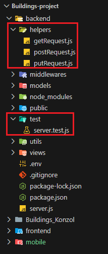
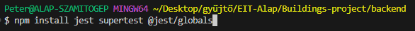
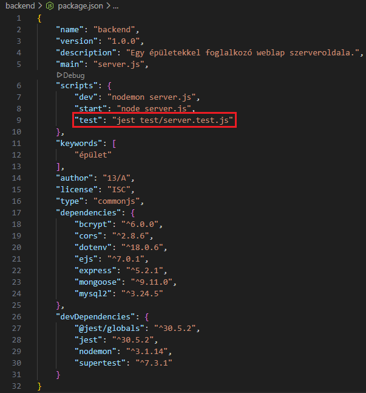

Alapbeállítások szerverteszteléshez
Hozzzuk létre a
helpers
és a
test
új mappákat a
backend
mappában. És azokban a következő állományokat:

Telepítsük a következő npm csomagokat.

Módosítsuk a
package.json
állományt.
